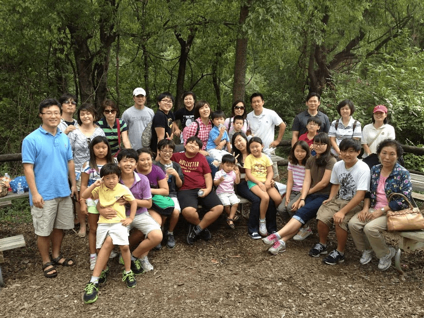
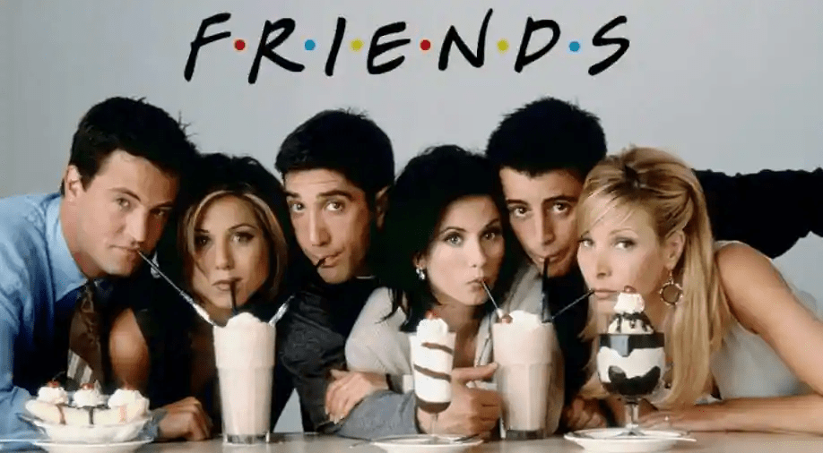
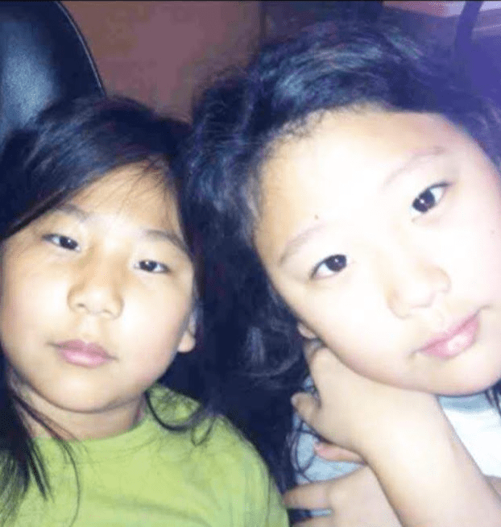

Sue Kim's Hobbies
This is the section where you can see all the hobbies that I have. There multiple things that I do and this section of the website will show a few of them. I play the violin and piano as well as apart of the orchestra, CSOYO. I also like to watch shows and play different mobile and computer games.

Violin Audio
This is an audio of me playing the violin for an audition. This was at the beginning phase of learning the music. Afterwards, I would practice and continue to film myself getting better and better.
Piano Video
This is a video of a TikTok of someone playing the piano. Piano is another hobby of mine where I play to express my feelings or to relieve myself of anxiety and panic. Thus, this video is a music piece that I am trying to learn.
Sue Kim's Hobbies
Sue Kim's Hobbies is the section that represents all the hobbies and interests that I have. These are the things I do in my free time as well as different talents and skills that I have. The hobbies section will show an insight of my life through the several things I do for fun.
Learn More...Sue Kim's Gallery
Sue Kim Gallery is where you can see several pictures of me and my life. This is where you'll see how I look and different images of me. The gallery portrays who I am and what you see whenever my name is brought up. You will have a picture in mind as a result of the gallery section.
 Learn More...Sue Kim's Friends
Sue Kim's Friends is the section where you can view several images of the friends that I have and who I spend quite a bit of time with. There will be a diverse amount of people being shown. The friends section demonstrates the people who I associate with for fun and who I like to be with.
 Learn More...Sue Kim's Education
Sue Kim's Education is the section that is all about the career that I want and where I would like to go for college. The section conveys my dream schools and the schools I have already been to during my years growing up.
Learn More...Sue Kim's Homepage
Sue Kim's Homepage is where you can go back to the home of the website. It will take you to the All About Sue Kim and Sue Kim's profile. This is where you can view the beginning again.
 Learn More...